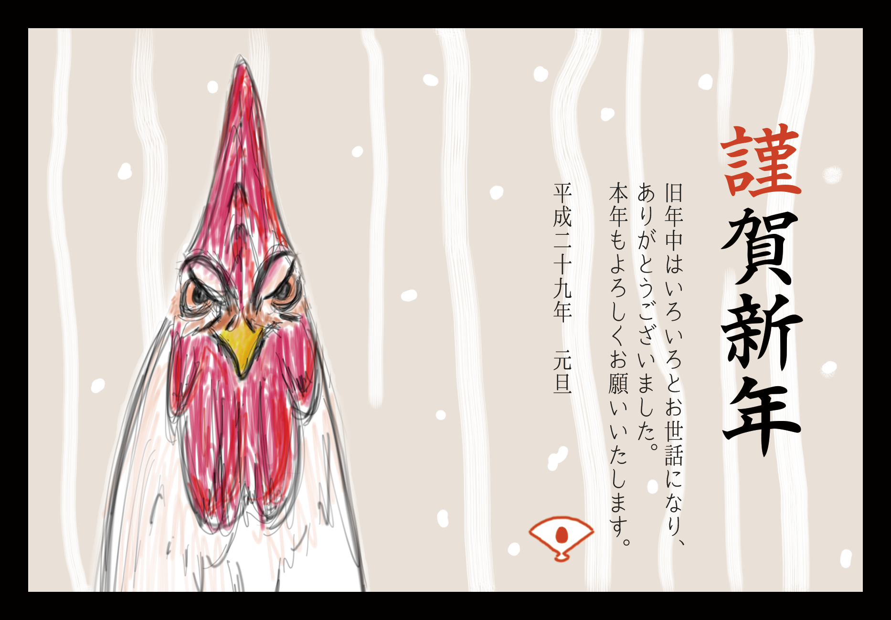
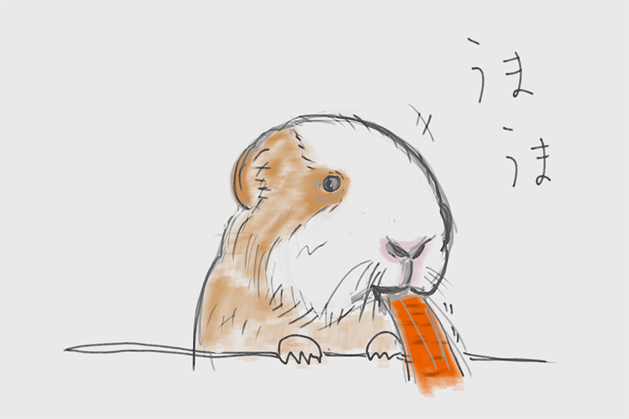

生まれて30年
- 孔子の名言「三十歳 而立」
- 「立つ」は「独立」する、という意味。
自身の学問の基礎が充実したものになり、自分なりの考えをまとめることができる、ということ。
「他人から学ぶこと（インプット）を充実させ、独立した自説を持てるようにしなさい」ということ。 - 自分ができることを洗い出し、見つめ直す。
「アウトプット」できることを組み合わせ、作品にする。
評価してもらう。
CSSのテクニックメモ
参考：【第２弾】少しのコードで実装可能な20のCSS小技集
none
sepia(60%)
grayscale(100%)
blur(2px)
brightness(1.5)
hue-rotate(90deg)
自由にIchigoJamを使えるようになりたい。
ので、BASICプログラムをネットで漁って、勉強してみる。
CSS3から使用できるようになったテクニック
会社入って以来初めてのくりみ。
内容は自己紹介にした。
自分のことを書いていくと、いくつか気づいたことが現れてくる。
今年の年賀状で使ったイラスト

仕事場でもこのWebページを更新するために、SorceTreeにGitHubのレポジトリを操作できるように設定した。
参考：SourceTreeとGithubでGitの練習環境をつくる
仕事のPCはMacで、普段からSorceTreeを使っている。
家でこのページを作ってる時から、仕事場でも編集できたらなーとか考えているうちに、SorceTreeでいけるんじゃ？と思いついた。
実際やってみたら、とても簡単にできてしまった。
多分、常識なんだろうなぁ。
[手順]
GitHubのリモートレポジトリのアドレスをSorceTreeに入れる
GitHubのアカウントを同期する
これで、家でも仕事場でも編集できるようになった。
とりあえず完全オリジナルでホームページを作ってみた。
おでん、にんじんを食べる
